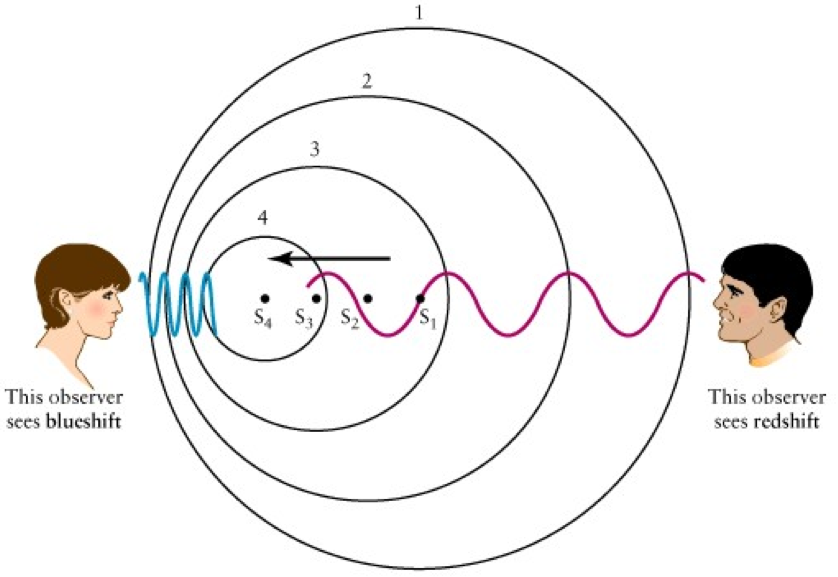

多普勒效应
1. 多普勒效应原理¶
多普勒效应是指接收信号的频率或者波长因为信号源和观测者的相对运动而产生变化。

根据多普勒效应，我们可以测量一个移动的目标的速度。 以声音信号为例，假设声源持续地发送声音信号，持有移动设备的接收者处于移动状态。 如上图所示，当用户远离或者接近声源时，由于多普勒效应，接收到的声音信号频率将发生变化。 若接收者远离声源，接收的声音信号频率将减小； 若接收者接近声源，接收的声音信号频率将增加，因此可以计算接收者相对声源的运动速度v为：
式中F_0表示原始的信号频率，\Delta F表示由于多普勒效应产生的频率变化，c表示空气中的声速。 由于速度对时间的积分等于位移，因此通过计算出速度并进行积分，我们就可以得到目标设备运动的距离。在目标初始位置我们已经知道的情况下，可以计算得目标的最终位置，从而实现对目标的定位追踪。
接收者一段时间的运动距离可以计算为d = \int_0^{T} v dt。 因此，给定初始位置的情况下，可以对移动设备进行追踪。 基于多普勒效应的追踪系统核心步骤在于计算频率的偏移\Delta F。 一般来说，得到\Delta F的方法是将接收到的声音信号做短时离散傅里叶变换（STFT）。 这样一来我们就能得到该信号的时频图。 如果原始信号的频率是固定的，那么通过计算原始信号频率和在某一时刻接收到的信号频率的差，就能得到频率偏移\Delta F。 STFT是一种基于滑动窗口的傅立叶变换方法，它的原理是一个滑动窗口在原信号上移动，对每个窗口内的信号做傅立叶变换，这样就可以得到该窗口时间范围内，信号的频域信息和频率偏移。 假设窗口的长度是L_w，采样率为F_s, 那么频率精度D_F就可以用如下公式计算得出:
如果我们知道了原始信号的频率F_0和声速c，我们就可以计算出这种方法在速度上的精度。
一般来说，越短的窗口在时域上效果越好，而在频域上效果较差。 长窗口频域上效果好，但是时域上效果差（时延比较高）。
有很多基于多普勒效应进行测距和定位的系统 ： The Magic Carpet能够利用多普勒雷达来监测使用者在一块“魔毯”上的运动。 AAMouse 实现了对手机的实时定位追踪。 通过使用AAMouse，用户可以将手机当成空间鼠标来使用。 它的原理是通过计算接收到的声音信号的频率偏移，根据多普勒效应计算出移动速度，再通过积分算出移动距离。 在初始点已知的情况下，AAMouse可以对手机进行实时的定位和追踪。 Swadloon 能够测量手机相对于声源的方向和位置。 它需要持续发出恒定频率声音信号的声源。 用户需要以一个恒定的速度将手机在一个很小的范围内移动（通常是用户用手去移动这个手机）。 同时Swadloon还假定用户以一个固定的模式去移动手机（比如沿着一个矩形移动），通过计算频率偏移，就能得出手机相对于声源的位置。
2. 参考文献¶
- J. Paradiso, C. Abler, K. Hsiao, and M. Reynolds. 1997. magic carpet: physical sensing for immersive environments. In Proceedings of ACM CHI.
- K. Kalgaonkar and B. Raj. 2009. One-handed gesture recognition using ultrasonic Doppler sonar. In Proceedings of IEEE Acoustics, Speech and Signal Processing
- S.P Tarzia, R.P. Dick, P.A Dinda, and G. Memik. 2009. Sonarbased measurement of user presence and attention. In Proceedings of ACM UbiComp.
- Sangki Yun, Yi-Chao Chen, and Lili Qiu. 2015. Turning a Mobile Device into a Mouse in the Air. In Proceedings of ACM MobiSys.
- Wenchao Huang, Yan Xiong, Xiang-Yang Li, Hao Lin, XuFei Mao, Panlong Yang, Yunhao Liu, and Xingfu Wang. 2015. Swadloon: Direction Finding and Indoor Localization Using Acoustic Signal by Shaking Smartphones. IEEE Transactions on Mobile Computing 14, 10 (2015), 2145-2157.
- Wei Wang, Alex X. Liu, and Ke Sun. 2016. Device-free Gesture Tracking Using Acoustic Signals. In Proceedings of ACM MOBICOM.